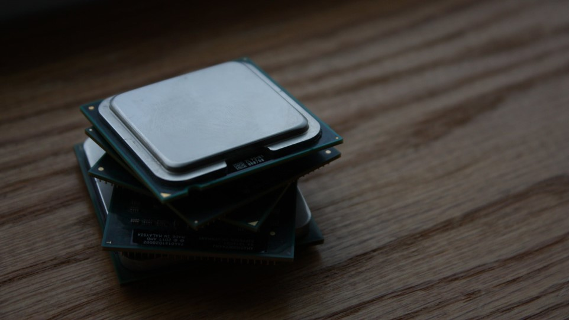
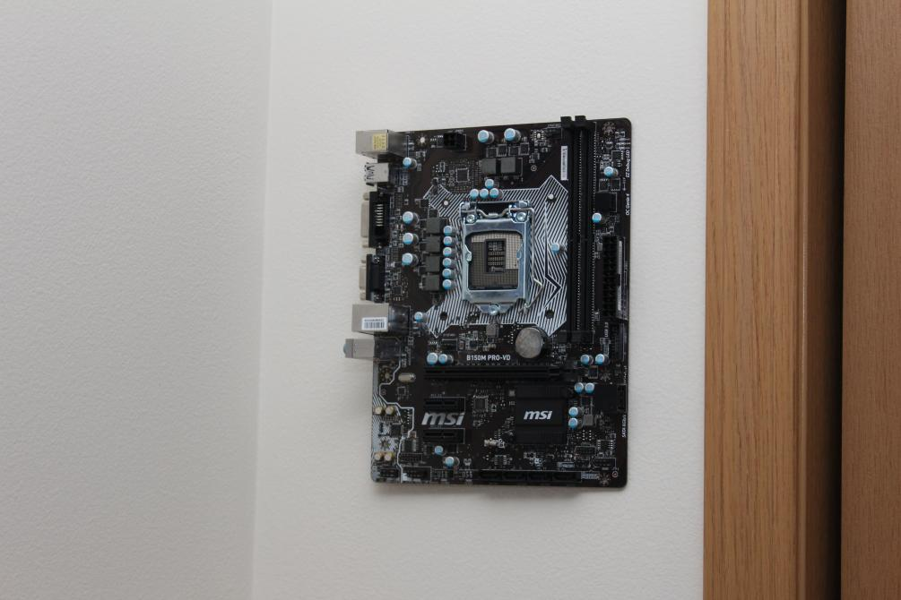
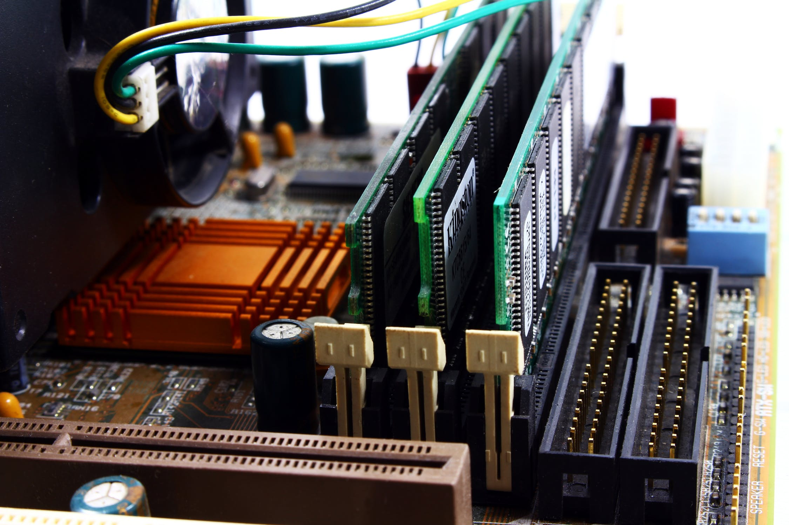

Core Componets
CPU
The CPU! It is known as the Central Processing Unit, and it is the brain of any good gaming computer. You have to consider three things when you're buying a CPU for your rig the clock speed, cores, and threads. There are two different brands to consider when purchasing a CPU Intel and AMD.
Motherboard
MOBO is next or the Motherboard, it's where all of the parts connect and communicate with each other. When it comes to picking a MOBO is to make sure the socket type matches the CPU! There are three main different MOBO sizes ATX, MATX, and ITX. There are other sizes as well. Measurements do matter when it comes to picking out your case, so make sure the MOBA fits! The case will say if it supports an ATX and or ITX. Brands to recommend are ASUS, ASRock, EVGA, Gigabyte, and MSI.
GPU

The GPU, or known as the Graphics Processing Unit, is an essential part of your gaming pc. The GPU renders your video game graphics that you see. You can check benchmarks of graphics card online to decide which one you want to buy.
RAM
Ram, or Random Access Memory, is the third most important component for gaming performance. It is tied directly to your CPU, so it will affect your CPU’s performance, depending on what ram you buy. DDR4 ram is faster than DDR3, and new components only support DDR4. Depending on your motherboard, speed somewhat matters such as AMD chipsets need faster ram than Intel chipsets. The majority of games will run excellent on 8gbs of ram, but you can get 16gbs of ram to play all modern games, and future proof, then finally 32gbs is showing off.
PSU

This gaming pc is mine, and the power supply is on the bottom left.
PSU is known as the Power Supply Unit, is the component the powers your machine. You always want to buy a new PSU from trusted suppliers such as Corsair and EVGA. If you buy from a none name brand or a used PSU, there is a good chance it won't work or even damage your system! Finally, make sure you get enough watts for your computer!